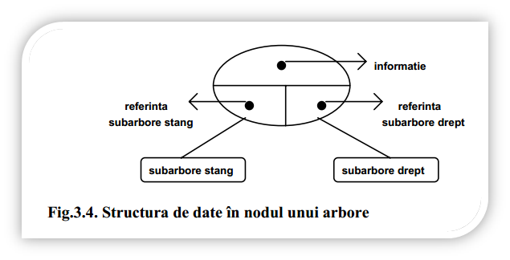

Implementarea arborilor
Implementarea arborilor presupune crearea în fiecare nod a unei structuri de date în care să existe câte un pointer/referință către fiecare dintre subarbori (Fig.3.4).
Un arbore vid are referințele rădăcinii nil (în Pascal) sau NULL (în C/C++).